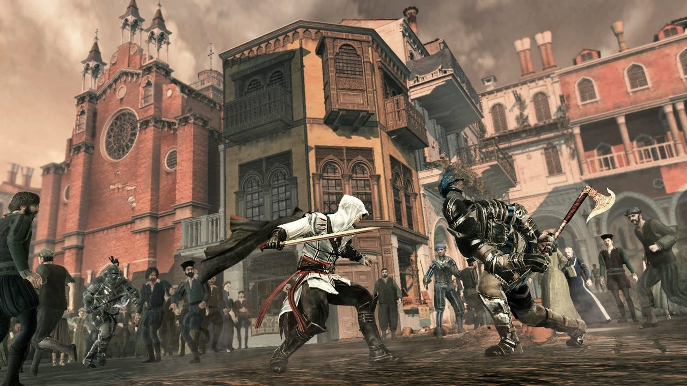

Assassin's Creed II is a historical action-adventure stealth video game developed by Ubisoft Montreal and published by Ubisoft for PlayStation 3, Xbox 360, Microsoft Windows and Mac OS X. It is the second video game installment of the Assassin's Creed series, and is a direct sequel to the 2007 video game Assassin's Creed.
The frame story is set in the 21st century, with player-controlled protagonist Desmond Miles escaping from Abstergo Industries with an employee, Lucy Stillman, after being forced to relive the genetic memories of ancestral assassin Altaïr ibn-La'Ahad through a machine known as the "Animus". After escaping from Abstergo, Desmond enters a device which is more advanced than the original Animus, the Animus 2.0, and relives the genetic memories of ancestral nobleman Ezio Auditore da Firenze, who lived during the Renaissance period of the late 15th and early 16th centuries in Italy. The player controls Ezio, who becomes an Assassin after his father and brothers are murdered by a traitor to their family. While controlling Ezio, the player can explore game renditions of Italian cities, regions, and landmarks in open world gameplay.

In Assassin's Creed II, you play as an assassin named Ezio. At the beginning of the game, Ezio loses his father and brothers and this thrusts him into becoming an assassin set on avenging their deaths. The game is interesting because you are actually a character named Desmond who is reliving the life of his ancestor, Ezio. The game is best played as stealth, but you have the option to not play that way most of the time. In the game, you are in various cities in Renaissance Italy. Ezio does a lot of climbing and the scenery is beautiful. Possibly the best aspect of AC II is the scenery. This is a fun and asthetically pleasing game.
| Name of Game | Year Released |
|---|---|
| Assassin's Creed IV: Black Flag | 2013 |
| Assassin's Creed | 2007 |
| Assassin's Creed II | 2009 |
| Assassin's Creed: Brotherhood | 2010 |
| Assassin's Creed: Revelations | 2011 |
| Assassin's Creed III | 2012 |